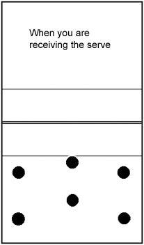
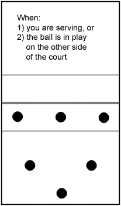
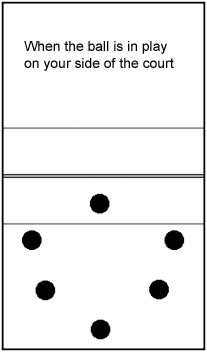

|
 This position is the same as our normal one. The front row covers any short serves. The back row plays with the middle player up and the wing players back. |
 In this position, the front row players are up at the net to block. The middle back row player has moved back and covers the entire back line. The wings of the back row move up to receive hits and cover any dinks. |
 During a play, whenever the ball has come over to our side of the net and has been dug, the front row wing players move back, so as to be able to adjust for any setting errors and to get a running jump for their hit. |